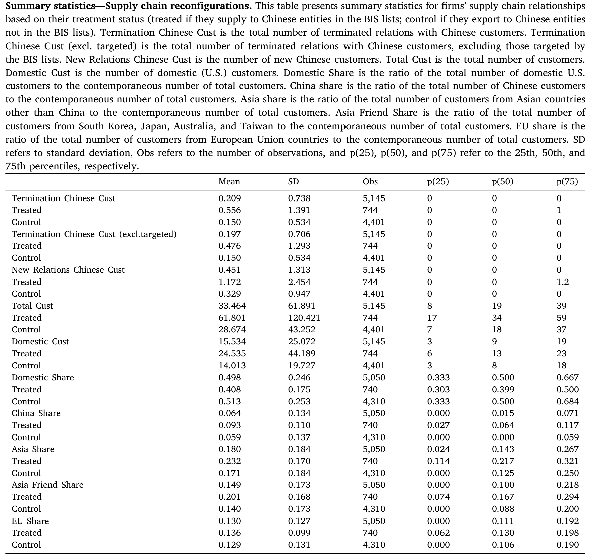
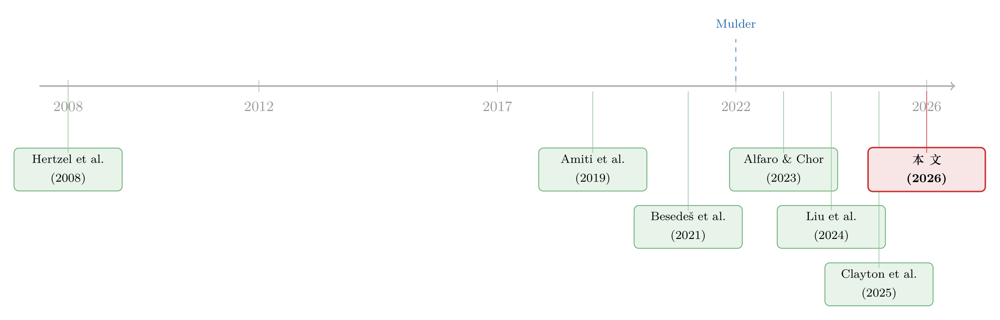

掐住别人的脖子，先勒疼了自己的手——出口管制的账，到底落在谁头上
本文读的是 Crosignani, Han, Macchiavelli & Silva (2026, Journal of Financial Economics)：美国为了守住自己在半导体、人工智能上的技术领先地位，禁止本国供应商把尖端技术卖给被点名的中国企业。政策确实达到了「让美国公司停止对华出口」的目的；但作者用一套手工整理、并与全球企业间供应链关系逐笔匹配的数据发现——真正承受最大损失的，恰恰是那批研发着「被保护技术」的美国供应商：它们在管制公告前后平均出现 3.6% 的异常股价下跌，单家公司市值平均蒸发约 $1 billion，全部受影响供应商合计损失超过 $100 billion，是中国被管制企业股市损失（约 $18 billion）的四倍。
1 一个被默认、却从没人算过的账
先讲一个张力。
过去几年，「出口管制（export controls）」这个词从国际政治版的角落，一路走到了财经头条的中央。逻辑听上去无懈可击：在半导体和人工智能这种决定国运的技术上，美国想保住领先，最直接的办法，就是不让最尖端的东西流到对手手里。于是美国商务部下属的工业与安全局（Bureau of Industry and Security, BIS）开出一份份名单，把一批中国企业列进「实体清单（Entity List）」，美国公司要想卖东西给它们，先得申请许可——而许可的默认结果，是「推定拒绝（presumption of denial）」。
政治上，这件事几乎没有反对声音。但有意思的是——整件事从头到尾，几乎没有人认真算过一笔账：管制在「碎片化带来的损失」和「国家安全可能的收益」之间，到底是怎么权衡的？正如作者在脚注里引用的一篇评论所言，针对出口管制，竟然「出奇地缺乏一份系统的成本—收益分析」。
这就是本文要切进去的缝。它不去谈国家安全那一头（那本就难以量化），而是死死盯住另一头：成本。而且是一个被直觉忽略掉的问题——这笔成本，真的主要落在中国企业头上吗？还是说，它先勒疼了出招者自己的手？
2 识别：用「相似的两家供应商」做对照
要回答「成本落在谁头上」，最大的难处是：被管制冲击的，从来不是一家孤立的公司，而是一条链。
出口管制和关税、制裁是三件不同的工具。关税针对的是进口的消费品；制裁多用来惩罚军事侵略，常常打在体量很小、全球足迹有限的国家或实体上（所以对本国企业的「附带伤害」往往很小）。出口管制不一样——它要管的，是本国最先进技术的出口流向，而打击对象（中国）又恰恰是美国企业一个重量级的贸易伙伴。工具不同，经济后果自然也不同。
作者的核心数据，来自 FactSet Revere——一套覆盖全球、记录「谁供货给谁」的供应商—客户关系数据，时间从 2007 一直到 2023 年第三季度。有了这张全球供应链网络，再叠上手工整理的 BIS 名单（精确到每一次「加入/移除」的公告日、生效日、企业地址与各种别名），作者就能在时间轴上看见：哪些美国供应商，正好卖货给了那批后来被列入清单的中国客户。
识别策略由此而来，本质是一个 双重差分 (difference-in-differences, DiD) 的思路：
- 处理组（treated）：向「被列入 BIS 清单的中国实体」供货的美国供应商（作者称之为 affected suppliers，受影响供应商）。
- 对照组（control）：向「同样在中国、但没被列入清单的中国企业」供货的美国供应商。
两组公司有什么共同点？它们都在做对华出口生意，业务结构相近。区别只在于：你的某个中国客户，恰好被点了名。
但真正关键的一步在于固定效应（fixed effects）的设计。如果只是粗粗地比「对华出口公司 vs. 不对华出口公司」，那 2018–19 年那场广撒网式的中美关税战、2022 年的《芯片法案》(CHIPS Act)、2023 年限制对华投资的行政令，全都会混进来污染估计。作者的处理是用行业 × 规模分位的颗粒化固定效应：只在同一个行业、同一个规模四分位里，比较那些都对华出口的公司。这样一来，那些「广撒网、不针对具体企业」的关税冲击就被吸收掉了，剩下的差异，才更干净地归因到「你的客户被列了名」这一件事上。
这也是本文识别上的漂亮之处：它不依赖「中美关系变差」这种宏大叙事，而是把变异（variation）压到了企业层面——同一个行业、同一规模档里，A 公司的客户被列名了，B 公司的没有。关税战是broad-based的（Amiti et al., 2019; Fajgelbaum et al., 2020），不针对具体公司，因此很难解释这种公司间的细微差别。
3 数据：从 1120 条名单，到 351 家被勒住的美国供应商
把数据的规模摆出来，才能体会这套手工活的分量。
剔除别名后，BIS 名单上一共有 732 家独立的中国实体，其中 470 家是企业、262 家是大学和研究机构；按清单分，425 来自实体清单、58 来自军事最终用户清单（Military End User List, MEU）、253 来自未核实清单（Unverified List, UVL）。这其中，能和供应链数据对上、且确实有供货关系的中国目标企业有 90 家，它们背后连着 351 家美国供应商——这就是「受影响供应商」的池子。
其余几路数据各司其职：股价来自 CRSP（最终事件研究样本是 2010–2022 年间 250 个事件、156 家供应商），资产负债表来自 Compustat（2007–2022 年面板，655 家公司，其中 126 家是受影响供应商），银行信贷则来自美联储 Y-14Q 的逐笔贷款数据（覆盖资产超 $50 billion 的大行、敞口超 $1 million 的贷款，约占样本期内全部工商业贷款的 75%）。还有 Refinitiv 的中国股价、Capital IQ 的国际公司报表——后者是为了去抓「中国客户有没有从美国以外的供应商那里买到替代品」。
先看一张「冲击长什么样」的描述性表格。如表 1 所示，处理组（受影响供应商）终止中国客户关系的数量均值是 0.556，对照组只有 0.150；新建中国客户关系，处理组 1.172、对照组 0.329。处理组对华客户占比（China Share）9.3%，高于对照组的 5.9%——它们本来就和中国绑得更深。但两组公司的客户地理分布整体相近，这正是 DiD 想要的「除处理外大体可比」。

Table 1
4 第一重发现：他们「合规」了，而且合规得过了头
接着，一个自然的问题是：政策起作用了吗？
起作用了，而且立竿见影。名单一公布，受影响的美国供应商就更可能终止与中国客户的关系——不只是和被列名的那家。这里出现了第一个值得玩味的细节：他们连那些没被列名的中国客户，也一并切断了；而且新建中国客户关系的意愿也显著下降。
为什么连没被点名的也不敢做了？因为再出口（re-export）的连带责任。美国出口商可能要为其客户把敏感技术「转手」给被管制对象而担责。于是理性的反应是宁可错杀、不可放过：整片地从中国客户那里撤出。政策想要「精准脱钩」，得到的却是「广谱脱钩（broad-based decoupling）」。
到这里，故事还在「政策达到了目的」的轨道上。真正的张力，藏在下一个问题里。
5 但真正关键的一步：他们能转身找到新客户吗？
一项管制如果只是把订单从中国挪走，那对美国供应商未必是坏事——只要它们能把产能转向别处：搬回国内（reshoring，回流），或转向政治上更「友好」的地区（friendshoring，友岸外包）。这是政策的乐观叙事所依赖的隐含前提。
然后，反转出现了。
在管制实施后的三年里，受影响的美国供应商并没有在国内、也没有在政治上更对齐的地区，建立起新的供应链关系来填补缺口。订单切走了，新客户却没接上。所谓回流和友岸外包，在数据里没有发生。
这一步是全文的枢纽。因为它意味着：脱钩对美国供应商而言，不是「客户换了一拨」，而是「一块业务凭空消失」。被保护的技术还在它们手里，但买家不见了。
6 于是，账单来了：股价、利润、就业、信贷
当一块业务凭空消失、又补不回来，市场会第一时间定价。
用事件研究（event study）法，作者算出受影响供应商在中国客户被列入名单前后的累计异常收益（cumulative abnormal return, CAR）——用 Fama–French 因子和事件前估计的 beta 来剥离市场波动。结果是：管制公告前后，股价出现 3.6% 的异常下跌，在经济意义上相当显著。换算成绝对量级——平均每家受影响供应商损失约 $1 billion 市值，全部受影响供应商合计超过 $100 billion。
把这个数字和对手放在一起看，冲击感才出来：所有上市的中国被管制企业，按当时汇率折算，股市损失合计约 $18 billion。也就是说——出招方自己供应商的股市损失，是被打击一方的整整四倍。 想掐住对手的咽喉，先勒住了自己的手腕。
再往资产负债表里看，损失不止停留在股价层面。相对可比公司，受影响供应商出现了营收、盈利能力和就业的下降。一个细节很说明问题：资本开支（capex）并没有下降。这暗示管制并没有从根本上改变这些公司的长期投资机会，它们更像是在做短期调整——比如裁掉一部分劳动力来止血，而不是重写自己的技术路线。
最后，连银行也跟着收手。用 Y-14Q 的逐笔贷款数据，作者发现受影响供应商的银行信贷下降、融资成本上升。一项以国家安全为名的政策，最终在信贷市场上，给这批「研发着被保护技术」的公司又加了一道紧箍。（一项动机良好的政策，如何在信贷端意外地制造出附带的退潮——这种「政策—信贷」的反噬，在另一个语境里也上演过，可参见《罚款本是好工具，为什么这次罚出了一场信贷退潮？》。）
7 镜子的另一面：中国企业反而更会「重配」供应链
读到这里，你可能会想：那中国一方就只是挨打吗？
并非如此，而这恰恰让美方的成本显得更刺眼。作者发现，被管制的中国目标企业在反应上更主动：它们一边减少与美国供应商的关系，一边迅速和替代性的中国本土供应商建立新连接来补位。不仅如此，那些向被管制中国企业供货、却不受美国管制约束的外国公司（比如美国以外的供应商），在管制实施后营收反而增加了。
换句话说，订单并没有消失，它只是流向了别处——流向了中国本土供应商，流向了不受美国法律约束的第三国厂商。Huawei 和 DeepSeek 近来的进展（Tedford, 2023; Yang, 2025），正是这种「绕道重配」在现实里的注脚，也让「出口管制能否真正守住技术领先」这件事，本身就成了一个问号。
被打击的一方在积极重组供应链，出招的一方却困在原地补不上缺口——这幅对比，把本文的核心结论钉死了：出口管制把更大的成本，压在了它本想保护的那些美国公司身上。
作者由此给出一条很克制、但很有政策含义的推论：如果出口管制要继续当主力工具，那它或许需要配套「刺激国内需求」的政策——给那些被禁止出口的同款产品，在国内找到买家。2022 年的《芯片法案》授权 $280 billion 来扶持本土研发和制造，方向与此一致；但作者也提醒，这类投资通常要好几年才能形成产能（VerWey, 2021）。
8 文献脉络：从「经济武器」到「地缘经济学」的细颗粒证据
把这篇论文放回它生长的脉络里，会看得更清楚。
最早，关于「用经济联系当武器」的讨论是宏观和历史性的。Mulder（2022）在《The Economic Weapon》里把制裁追溯到一战时英法对德国的封锁；金融学这边，更经典的是供应链冲击如何沿着企业间联系传导的文献——Hertzel et al.（2008）就记录了财务困境如何沿供应链产生财富效应。
接着，是制裁的实证文献。Ahn & Ludema（2020）把定向制裁拆成「剑与盾」；而和本文形成最直接对照的，是 Besedeš et al.（2021）——他们发现制裁对德国企业的「附带伤害」其实很小。为什么？因为制裁多打在体量小、全球足迹有限的对象上。本文恰恰是在这里翻出新意：出口管制打的是中国这个美国企业的重量级伙伴，于是附带伤害不再「小」。

然后，是 2018–19 中美贸易战催生的一批关税研究（Amiti et al., 2019; Fajgelbaum et al., 2020），以及 Alfaro & Chor（2023）记录的「大重配（great reallocation）」——美国进口如何从中国转向越南、墨西哥。但这些都是广撒网的关税，不针对具体公司。
但真正关键的一步，是新兴的「地缘经济学（geoeconomics）」理论文献。Clayton et al.（2025c）论证：对霸权国而言，即便管制会摧毁本国一部分企业价值，它仍可能是最优的；Liu et al.（2024）则用一个带技术转移的校准模型，说明对半导体的全面限制有可能提高本国福利。这些都是理论上说「就算伤己也值得」。本文站的位置，正是给这套理论补上实证的另一半：它第一次细颗粒地量出——那个「伤己」到底有多大，又具体落在了谁头上。和 Han et al.（2024）测量中美技术依赖、记录管制对中国企业创新质量影响的工作互为镜像，本文把镜头对准了美国一侧。
9 评论与延伸（Q&A + 研究方向）
(a) 几个可能的疑问
Q：处理组本来就和中国绑得更深（China Share 9.3% vs 5.9%），这会不会让结果是「绑得深的公司本来就更脆弱」，而不是管制的因果？
这正是颗粒化固定效应要对付的问题。作者在「行业 × 规模分位」内部比较都对华出口的公司，把「对华暴露程度」这类结构性差异尽量吸收掉；CAR 的识别更进一步，落在公告日前后的窗口上——同一家公司、同一段时间，差别只在「你的客户这天被列名了」。在这个窗口里，结构性脆弱难以解释那
3.6%的跳跌。
Q：3.6% 的 CAR 和「平均损失 $1 billion」，会不会被几家超大公司带偏？
这是事件研究常见的担忧。$1 billion 是市值绝对量，天然偏向大公司；但
3.6%是比例意义上的异常收益，受规模影响较小。两个口径一起看更稳妥：比例上显著、绝对量上可观。真正要警惕的是样本里250个事件来自156家公司——一家公司可能对应多个被列名客户，事件并不独立，推断时要按公司聚类，否则会高估显著性。
Q：为什么资本开支不降，反而是就业降？这不矛盾吗？
恰恰不矛盾，而且是个有信息量的细节。capex 不降说明公司没有下调对长期技术机会的判断——它们没把这当成「这门技术不行了」，而是「这个客户没了」。于是调整发生在短期、可逆性更高的边际上：先裁掉对应那块业务的人力止血。这也呼应了「订单凭空消失、又补不回来」的故事。
Q：股价那 3.6% 的下跌，会不会只是反映了「中美关系恶化」这种宏观情绪，而非这家公司的具体损失？
事件研究用 Fama–French 因子和事件前 beta 剥离了市场层面的共同波动，宏观情绪大体被基准吸收。更有说服力的是横截面：如果只是普遍情绪，所有对华公司都该跌；但作者比较的是「客户被列名 vs. 未被列名」，跌的是前者——这把「情绪」和「针对性冲击」分开了。
Q：中国企业能重配供应链、外国供应商营收上升，是不是说明管制根本没用？
不能这么快下结论。本文测的是成本端，没有测国家安全收益那一头——也许延缓对手获得最尖端技术的时间窗口本身就有战略价值。论文的克制结论是：成本被低估了、且主要落在美国供应商身上；至于「值不值」，要等有人把收益那一半也量出来才能回答。这正是它留给后人的缺口。
Q：出口管制和制裁，经验上真的不一样吗，还是只是叫法不同？
数据说不一样。制裁文献（如 Besedeš et al., 2021）普遍发现对本国企业附带伤害很小，因为打击对象体量小、足迹窄；本文的出口管制打在中国这个美国企业的核心贸易伙伴上，于是附带伤害显著、且四倍于被打击方的股市损失。工具的战略目标不同，落到企业资产负债表上的后果也就截然不同。
(b) 几个可能的研究问题与提案
1. 出口管制冲击下的公司债与信用利差
【经济故事】本文已经看到银行信贷收缩、融资成本上升，但只用了 Y-14Q 的银行端。一个自然的延伸是债券市场：被列名客户公布后，受影响供应商的公司债二级利差、新发一级定价、评级展望会怎么动？如果股权市场定价了
3.6%的损失，债权人对违约距离的重估应当同步出现，且对杠杆更高的供应商更剧烈。【可行性】高。识别可直接沿用本文的「被列名 vs. 未列名客户」DiD，把左侧换成 TRACE 的债券利差或一级发行利差，叠加发行人固定效应。数据现成，难点在于把 FactSet 供应链关系匹配到债券发行人 CUSIP，样本会变小但仍可做。
2. 外资持有人会先一步「逃离」被管制供应商吗？
【经济故事】如果管制对美国供应商是负向冲击，那么对地缘风险更敏感的外国机构投资者，可能在公告前后比本土投资者更快减持。这能把「谁在为地缘风险定价、定价速度有多快」拆开看。
【可行性】中。需要 13F（本土）与跨境持仓数据（如 FactSet/Refinitiv 的机构持仓）拼出投资者国籍，识别仍用本文的事件窗口。难点是外资持仓披露频率低（季度），高频反应看不清，只能看季度级别的再配置。
3. 上游的「上游」：冲击在供应链里传导几层？
【经济故事】本文盯的是直接供货给中国目标企业的「一级供应商」。但这些供应商自己也有供应商。冲击会不会沿供应链上溯，让二级、三级美国厂商也受波及？这能把「附带伤害」的总盘子从
$100 billion往上修正。【可行性】中。FactSet Revere 本身就是多层网络，技术上能往上追；难点在于越往上、关系越稀疏、匹配噪声越大，需要谨慎处理网络中的间接暴露度量（参考 Hertzel et al., 2008 的传导框架）。
4. 「友岸外包」为什么失败：是没需求，还是有摩擦？
【经济故事】本文最反直觉的发现是受影响供应商三年内没建立新客户。但「没发生」有两种解释：要么国内/友好地区根本没有对这些尖端产品的需求，要么是有需求但存在搬迁/认证/合同摩擦。区分这两者，对「该不该用 CHIPS Act 式补贴去刺激国内需求」是决定性的。
【可行性】低到中。理想识别是找一个外生地提振了国内需求的政策（如某细分领域的政府采购扩张），看它是否让受影响供应商更快重建关系。难点是这样的清洁外生冲击不易找到，多半只能做异质性分析（按产品的国内可替代性分组）作为间接证据。
10 我的判断
这篇论文最大的贡献，是把一个一直被默认、却从没被认真量化的成本，做成了可信的数字。它的聪明之处全在数据工程：手工整理 BIS 名单、与全球供应链逐笔匹配、再叠上股价、报表、逐笔贷款四套数据——正是这套笨功夫，才让「行业 × 规模分位内、客户被列名 vs. 未列名」这种细颗粒识别成为可能，从而把估计从「中美交恶」的宏大叙事里干净地剥出来。结论本身也漂亮地反直觉：出招方自己的股市损失，是被打击方的四倍。
但我对识别有两点保留。其一，事件独立性：250 个事件来自 156 家公司，同一公司的多次列名事件在时间和冲击上未必独立，CAR 的标准误若不做足够保守的聚类，显著性容易被高估（这类事件研究推断的陷阱，可参见《事件研究里的「假阳性」：当一根 t 值不再等于因果》）。其二，也是更根本的——本文测的是天平的一端。它诚实地只谈成本，但「出口管制划不划算」终究是成本对收益的比较，而国家安全收益那一头仍是空白。所以这篇论文最好的读法，不是「出口管制是亏本买卖」，而是「它的成本比你以为的大得多、且主要由美国自己研发尖端技术的公司承担——现在，请把另一半也量出来」。
我接下来最想看到的，是有人把这套企业层面的成本，和某种可量化的「安全收益」（哪怕是延缓对手获得特定制程的时间）放进同一个框架里对照。在那之前，这篇论文已经做了最难、也最该先做的那一半：把账单摊开，写清楚它落在了谁的手腕上。
参考文献
Ahn, D.P., Ludema, R.D. (2020). The sword and the shield: The economics of targeted sanctions. European Economic Review 130, 103587.
Alfaro, L., Chor, D. (2023). Global supply chains: The looming 'great reallocation'. NBER Working Paper No. w31661.
Amiti, M., Redding, S.J., Weinstein, D.E. (2019). The impact of the 2018 tariffs on prices and welfare. Journal of Economic Perspectives 33(4), 187–210.
Besedeš, T., Goldbach, S., Nitsch, V. (2021). Cited in Crosignani et al. (2026) on the limited collateral damage of sanctions to German firms.
Clayton, C., Maggiori, M., Schreger, J. (2025). Geoeconomics and the optimality of export controls. Working Paper.
Crosignani, M., Han, L., Macchiavelli, M., Silva, A.F. (2026). Securing technological leadership? The cost of export controls on firms. Journal of Financial Economics 175, 104192.
Fajgelbaum, P.D., Goldberg, P.K., Kennedy, P.J., Khandelwal, A.K. (2020). Cited in Crosignani et al. (2026) on the costs of the U.S.–China trade war.
Han, L., et al. (2024). Technological dependence between the U.S. and China. Working Paper.
Hertzel, M.G., Li, Z., Officer, M.S., Rodgers, K.J. (2008). Inter-firm linkages and the wealth effects of financial distress along the supply chain. Journal of Financial Economics 87(2), 374–387.
Liu, J., Rotemberg, M., Traiberman, S. (2024). Sabotage as industrial policy. Working Paper.
Mulder, N. (2022). The Economic Weapon: The Rise of Sanctions as a Tool of Modern War. Yale University Press.
Sachdeva, K., Silva, A.F., Slutzky, P., Xu, B.Y. (2025). Defunding controversial industries: Can targeted credit rationing choke firms? Journal of Financial Economics 172, 104133.
VerWey, J. (2021). No permits, no fabs. CSET Policy Brief.